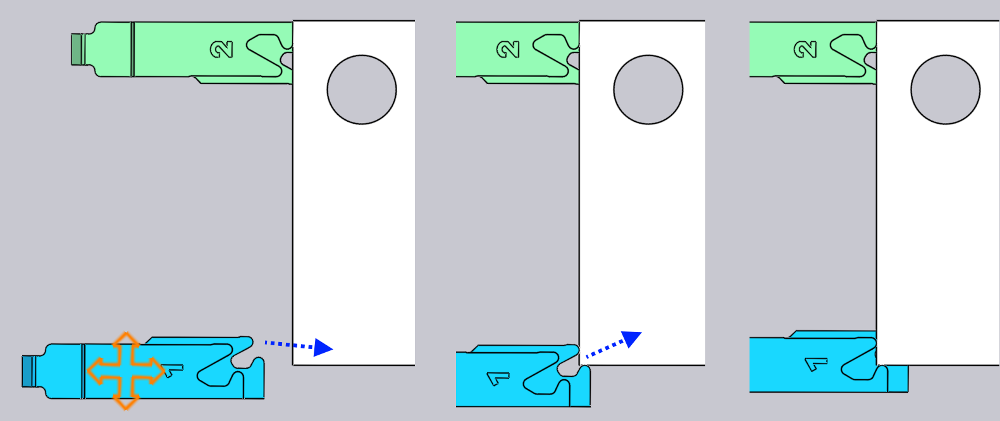

Úprava zadných dorazov
Pozície zadných dorazov pre každý ohyb je možné nastaviť jednoduchým kliknutím na zadný doraz — tým sa otvorí okno Gauge (Zadný doraz), ktoré vidíte tu naboku.
Okno Gauge (Zadný doraz)

-
V poli Zadný doraz (Zadný doraz) vyberte zadný doraz, ktorý chcete upraviť (takisto je možné jednoducho kliknúť na zadný doraz, otvorí sa okno na jeho úpravy). Po kliknutí na iný zadný doraz so stlačeným klávesom Shift+klik, je možné upraviť všeobecné nastavenia oboch zadných dorazov súčasne.
-
Parametre Z, X a R sa používajú na nastavenie pozície zadných dorazov v troch smeroch. Pre väčšinu ohraňovacích lisov sú smery osí znázornené na obrázku nižšie:[1]

-
Pole Uchopovacia poloha (Plocha dorazu) sa používa na stanovenie rôznych plôch zadných dorazov na dorážanie dielcov. Dostupné plochy sú závislé od stroja. Nie všetky plochy je možné použiť na dorážanie všetkých ohybov (TecZone Bend vás bude informovať, kedy ktorú konkrétnu plochu nie je možné použiť). Na obrázku nižšie sú zobrazené rôzne plochy dorazov, ktoré sa používajú:

-
Nastavenie Spätný pohyb (Odtiahnutie) sa používa na nastavenie vzdialenosti odsunutia zadných dorazov pred ohýbaním. Pri niektorých ohyboch je nutné odsunúť zadné dorazy (v smere +X) o určitú vzdialenosť hneď po zovretí dielca horným nástrojom, no ešte pred jeho ohnutím (aby sa predišlo kolízii). Toto nastavenie sa používa na nastavenie vzdialenosti odsunutia. Ak upravujete toto nastavenie, TecZone Bend v ukážke odtiahne zadné dorazy o skutočne zadanú hodnotu, pričom je možné posúdiť, či je zadané odtiahnutie postačujúce.
-
Pomocou tlačidla Automaticky vypočítať (Auto umiestnenie) požiadate TecZone Bend o automatické prepočítanie pozície zadného dorazu. Vo všeobecnosti ponúka TecZone Bend viacero možností dorážania dielca. Opakovaným stláčaním tlačidla Auto-Place sa dookola prepínate medzi týmito možnosťami. Ak sa chcete vrátiť k predvolenému nastaveniu, zatvorte okno zadných dorazov, kliknite opäť na zadný doraz, potom kliknite na Auto-Place - prvá tam zvolená pozícia je predvolená (tá by bola aj výsledkom pôvodného automatického prepočtu postupnosti ohýbania a návrhu nástrojov).
-
Pomocou tlačidla Otočiť dielec (Otočiť) je možné vložiť dielec do stroja druhou stranou a opäť prepočítať dorážanie. Je to podobné ako tlačidlo Flip Part v okne Ohýbanie.
-
Pomocou tlačidiel Späť (Predošlý) a Ďalej (Ďalší) prejdete na predchádzajúci alebo ďalší ohyb a upravíte polohy zadných dorazov ohybu.
Rozšírené
Tu je niekoľko ďalších procesov na zadných dorazoch:
Úprava zadných dorazov pre viaceré ohyby
Existuje možnosť úprav zadných dorazov viacerých ohybov naraz.
Pritom najprv zvoľte viacero ohybov, stlačením Shift+klik na číslo ohybu v navigátore ohýbania. Potom kliknite na zadný doraz. Na obrázku vedľa sú zobrazené pozície zadných dorazov pre ohyby 1, 2 a 4, ktoré sú upravované spoločne:

V tomto príklade používajú všetky ohyby pre zadný doraz tú istú pozíciu v smere Z, úpravou tejto pozície sa nastaví pozícia v smere Z pre všetky zadné dorazy. Hodnoty X a R sú prázdne, pretože sú pre každý ohyb odlišné. Môžete však zadať hodnotu X alebo R, tá sa následne použije pre všetky ohyby.
Túto funkciu budete vlastne potrebovať len zriedka. Okno zadných dorazov berie do úvahy obmedzenia konkrétneho ohraňovacieho lisu a aplikuje všetky dané obmedzenia. Napríklad, polohy osi R oboch zadných dorazov musia byť pre niektoré stroje rovnaké (ktoré nemajú nezávislé osi R1 a R2) - TecZone Bend sa postará o to, aby po úprave pozície R pre jeden zadný doraz, nasledovala hneď úprava pozície aj druhého.
Pri niektorých strojoch s 2-osovým systémom zadných dorazov sa pozície osi Z nastavujú ručne, nemenia sa bežne od ohybu k ohybu (znamenalo by to, že operátor by musel ručne nastavovať pozície zadných dorazov po každom ohybe). Pri takýchto strojoch, keď je poloha osi Z nastavená pre jeden ohyb, je nastavená rovnako pre všetky ohyby. Stav kolízií, stav odsunutého zadného dorazu atď. sa vypočíta pre všetky ohyby okamžite, takže je veľmi jednoduché nájsť spoločné polohy Z1 a Z2, ktoré môžu byť prijateľné pre všetky ohyby.
Presunutie zadných dorazov
Aj keď je možné zadaním hodnôt Z, X a R nastaviť presné pozície zadných dorazov, často je jednoduchšie nastaviť pozíciu zadných dorazov ich jednoduchým potiahnutím až po kontakt s dielcom.
-
Kliknite raz na zadný doraz, ktorý chcete potiahnuť.
-
Kliknite na zvolený zadný doraz a posunutím nastavte jeho pozíciu. V závislosti od uhla pohľadu sa zadný doraz ťahá pozdĺž horizontálnej alebo vertikálnej roviny.
Zvyčajne začnete so zadným dorazom ktorý je ďalej od dielca a ťaháte ho smerom k dielcu, kým sa ho nedotkne. Môžete pokračovať v ťahaní (pritlačení zadného dorazu smerom k dielcu), drôtený model sa bude pohybovať ďalej, no aktuálny zadný doraz sa zastaví keď sa dotkne dielca.

Obrázok vyššie to znázorňuje v praxi — začneme ťahať zadný doraz smerom k plechu v smere naznačenom šípkou. Hneď ako sa zadný doraz dotkne plechu, zastaví sa a v pohybe pokračuje iba drôtený model (aby ste videli, kam sa pokúšate ťahať zadný doraz). Uľahčuje to nastavenie polohy zadného dorazu tak, aby sa dotýkalo dielca bez medzier a bez kolízií.
Na obrázku vyššie je zobrazený pohľad na zadný doraz smerom približne zhora nadol. Zadný doraz sa teda pohybuje v rovine X-Z, pričom hodnota R zadného dorazu ostáva konštantná. Ak otočíte pohľad viac zhora, zadný doraz sa posunie v rovine X-R a konštantná bude hodnota osi Z.
Uchytenie zovretím počas ťahania
Ťahaním zadného dorazu je možné jednoducho presne nastaviť polohu zadných dorazov použitím jednej z plôch typu Stop (doraz). Ak používate jednu z plôch typu Clamp (zovretie), je to náročnejšie, pretože musíte zovrieť dielec dvoma plochami zadného dorazu.
TecZone Bend to uľahčuje použitím automatického uchytenia, ak je zadný doraz blízko možnej polohy zovretia. Ak chcete použiť tento mechanizmus, najskôr otočte pohľad tak, aby ste mali pohľad na zadné dorazy zhora. Potom potiahnite zadné dorazy tak, aby roh, ktorý chcete zovrieť, sa nachádzal blízko výrezov dorazov:

Na obrázku vyššie je zobrazený proces operácie zovretia. Keď presunieme zadné dorazy blízko k polohe zovretia, prichytia sa do polohy Zovretie 1 (pozri obrázok vyššie, uprostred). Ďalším potiahnutím dorazy zaskočia do polohy Zovretie 2 (pozri obrázok vyššie, vpravo). Všimnite si, že hodnota R zadného dorazu sa automaticky mení nahor alebo nadol, keď sa približujeme k týmto dvom polohám zovretia.